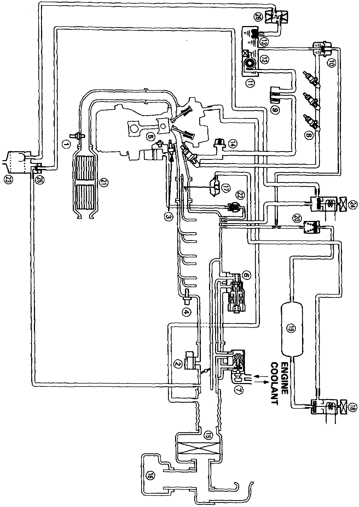

System Schematic Diagrams
System Schematic:

SYSTEM SCHEMATIC
SYSTEM SCHEMATIC LEGEND:
Item Description
1 Heated Oxygen Sensor
2 Manifold Absolute Pressure Sensor
3 Engine Coolant Temperature Sensor
4 Intake Air Temperature Sensor
5 Knock Sensor
6 Idle Air Control Valve
7 Fast Idle Thermo Valve
8 Fuel Injector
9 Fuel Filter
10 Fuel Pressure Regulator
11 Fuel Pump
12 Fuel Tank
13 Fuel Tank Evaporative (EVAP) Emission Valve
14 Fuel Pulsation Damper
15 Air Cleaner
16 Resonator
17 Intake Air Bypass (IAB) Control Diaphragm Valve
18 IAB Control Solenoid Valve
19 IAB Vacuum Tank
20 IAB Check Valve
21 Three-Way Converter
22 Positive Crankcase Ventilation Valve
23 EVAP Control Canister
24 EVAP Purge Control Solenoid Valve
25 EVAP Purge Control Diaphragm Valve
26 EVAP Two-Way Valve